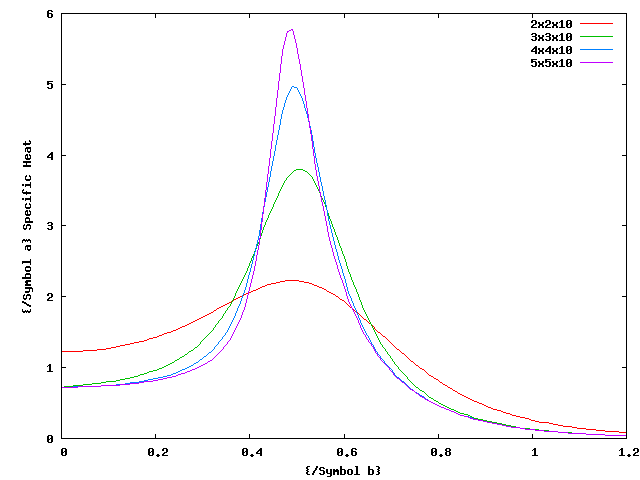
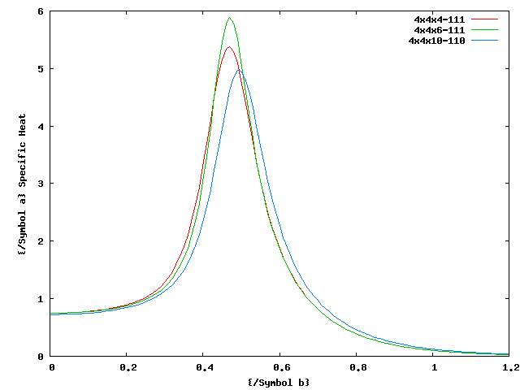
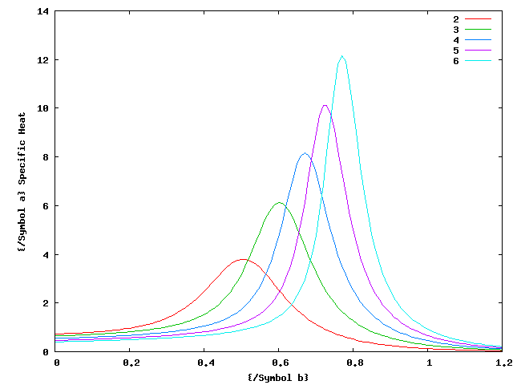
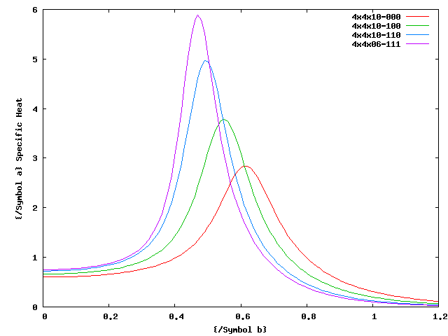

The specific heat for a range of partition functions is displayed on this page.
1) Fix q=2, the graph below shows the specific heat for partition functions growing in the X by Y direction.

2) A comparison between RB Pearson's results, and my own.

3) The lattice size is fixed, and the number of states q is increased from 2 to 6.

4) A look at different boundary conditions.
Key: 0 - no boundary
conditions, 1 means periodic boundary conditions. XYZ is the axis the
boundary condition is on.
eg 4x4x10-110, means the lattice has periodic boundary conditions only on the X and Y plane.
